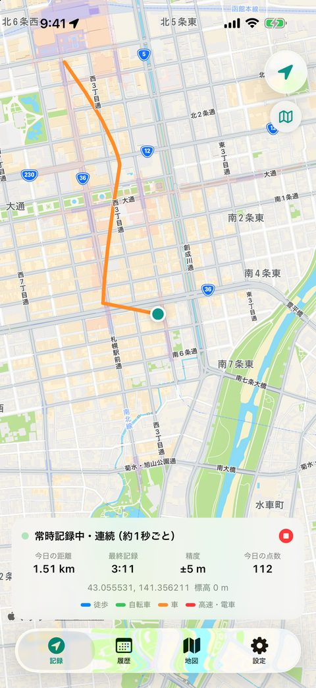
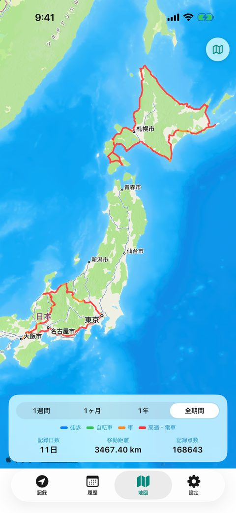
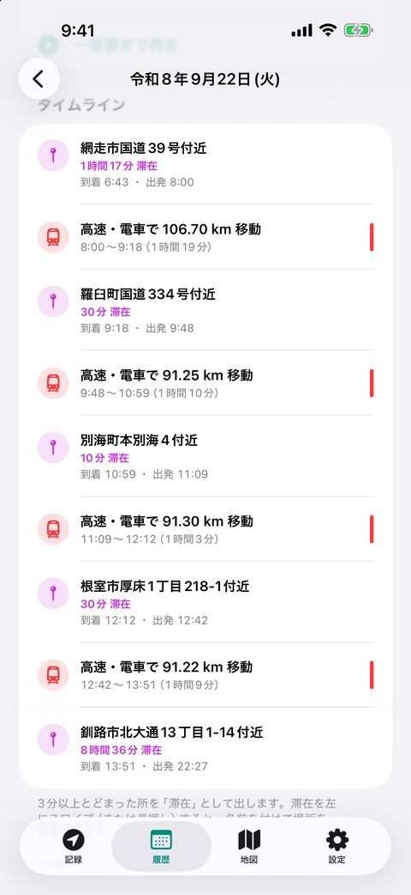
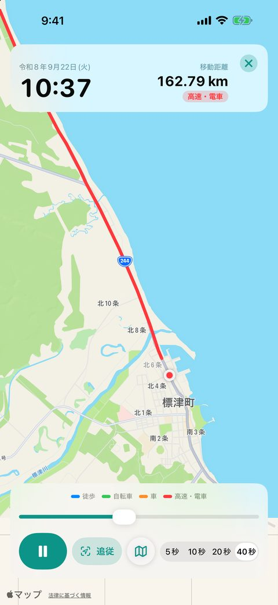
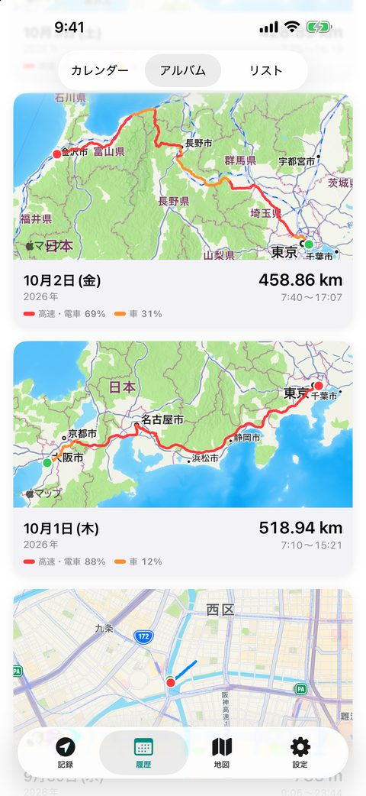
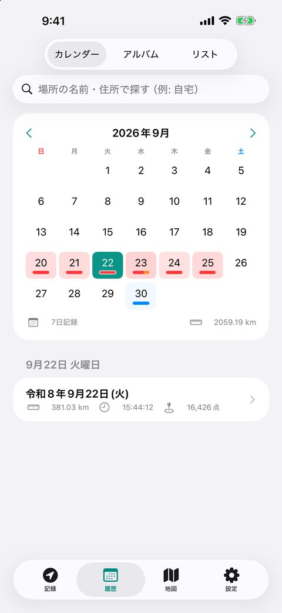

開くだけで、
毎日の移動を自動記録。
ハマログは、開始ボタンのいらない iPhone の GPS ロガーです。いつ、どこへ、どうやって移動したかを、速さで色分けした地図とタイムラインで振り返れます。
App Store でダウンロード（無料）- 広告なし
- アカウント登録不要
- 記録は端末と自分の iCloud だけ
- iPhone（iOS 17 以降）

特長
記録の操作はいりません。振り返る楽しさに集中できます。
🔁
ずっと自動で記録
一度開けば記録が始まります。アプリを終了しても、移動を始めると自動で記録を再開。日付が変わると次の日の記録になります。
🔋
電池にやさしい
標準は2分ごとに1点。必要な時だけ数秒間 GPS を使い、止まっている間や自宅にいる間は記録を控えます。
🎨
速さで色分け
徒歩・自転車・車・高速道路や電車を色で表示。その日の移動手段の割合も一目で分かります。
徒歩
自転車
車
高速・電車
🗓️
滞在と移動のタイムライン
「自宅に滞在 → 車で12.3km 移動 → ○○付近に30分滞在」のように一日を整理。住所は自動で表示し、自宅などは名前を付けて登録できます。
✍️
一筆書きで再生
一日の軌跡を、数秒〜数十秒で地図に描いていきます。地図が先頭に付いていく「追従」モード付き。
🗺️
アルバムと全期間の地図
一日一枚の地図カードを並べたアルバム、移動手段で色づくカレンダー、これまでの移動を重ねた全期間の地図。
画面
画面の記録はテスト用に作った北海道一周と本州ドライブのデータです。





プライバシー
位置情報は、とても大切な個人の情報です。
- 記録は iPhone の中と、あなた自身の iCloud Drive（バックアップを使う場合）にだけ保存します。
- 開発者のサーバーへ位置情報を送ることはありません。広告や解析ツールも入っていません。
- 「完全停止」で、位置情報の利用をいつでもすべて止められます。